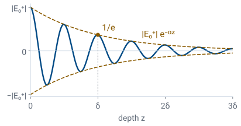

L36 - Plane-Wave Solutions and Lossy Media#
Plane-Wave Solutions and Lossy Media
Today we solve the Helmholtz equation, then add conductivity and find how fast a wave decays.
Lesson 36 · Module 4: Dynamic Fields · Maj Ellis · Dr. Neil Rogers
Learning Objectives
- I understand the process of decoupling and finding solutions for Maxwell's equations for dynamic fields.
Lesson 35 decoupled Maxwell’s equations in a lossless, source-free region into the Helmholtz equation for each field. Today we solve it for a field that varies along one direction only, and the solution is the same pair of traveling waves Lesson 4 found on the transmission line. Then we put the conductivity \(\sigma\) back. Conduction current makes the permittivity complex, the phase constant becomes a complex propagation constant \(\gamma = \alpha + j\beta\), and the wave decays as it travels. We derive \(\alpha\) and \(\beta\) exactly, simplify them for a low-loss dielectric and for a good conductor, and derive the skin depth that Lesson 27 quoted.
Where We Were
Lesson 35: in a lossless, source-free region, each field obeys the Helmholtz equation:
Lesson 35 wrote Maxwell’s equations with phasors, removed the sources and the conductivity, and took the curl of Faraday’s law to eliminate \(\widetilde{\mathbf{H}}\). The result is the Helmholtz equation above, and the magnetic field obeys the same equation with the same \(\beta\). The vector Laplacian acts on each Cartesian component separately, so the Helmholtz equation is three scalar equations of the same form, one for each of \(\widetilde{E}_x\), \(\widetilde{E}_y\), and \(\widetilde{E}_z\). Today we solve one of them.
A Field That Varies Only Along z
Assume \(\widetilde{\mathbf{E}} = \hat{\mathbf{x}}\ \widetilde{E}_x(z)\):
We look for the simplest field the equation allows. We let the electric field point along \(\hat{\mathbf{x}}\) and depend only on \(z\), so it is the same at every point of each plane \(z = \) constant. First we check that this field is allowed: its divergence is \(\partial\widetilde{E}_x/\partial x\), which is zero because \(\widetilde{E}_x\) does not depend on \(x\), so it satisfies \(\nabla\cdot\widetilde{\mathbf{E}} = 0\). The Laplacian of \(\widetilde{E}_x\) then has only its \(z\) term, and because \(\widetilde{E}_x\) depends on \(z\) alone, that term is an ordinary second derivative. The vector equation reduces to one ordinary differential equation, the same one Lesson 4 solved for the voltage on a lossless line.
The General Solution
Assume \(\widetilde{E}_x = A e^{sz}\):
We solve it as Lesson 4 did. A trial solution \(A e^{sz}\) has second derivative \(s^2 A e^{sz}\); substituting and dividing out \(A e^{sz}\), which is never zero, leaves the characteristic equation \(s^2 + \beta^2 = 0\). Its roots are \(s = \pm j\beta\). The equation is linear and second order, so the general solution is the sum of the two exponentials, each with its own complex constant. We name the constants \(E_0^+\) and \(E_0^-\) by the direction each wave travels, which the next frame shows. A source somewhere outside the region sets \(E_0^+\), and a boundary that reflects part of the wave sets \(E_0^-\), the subject of Lesson 38.
Phase Velocity and Wavelength
We return to the time domain by multiplying by \(e^{j\omega t}\) and taking the real part, with \(E_0^\pm = \left\vert E_0^\pm\right\vert e^{j\phi^\pm}\). As in Lesson 4, a point of constant phase on the first term moves toward \(+z\) at the phase velocity \(\omega/\beta\), and the second term moves toward \(-z\) at the same speed. Substituting \(\beta = \omega\sqrt{\mu\epsilon}\) gives \(v_p = 1/\sqrt{\mu\epsilon}\), the speed Lesson 35 read from the wave equation. At a fixed instant, the field repeats every \(2\pi/\beta\) in \(z\), which is the wavelength. Because the field is the same everywhere on each plane of constant \(z\), each term is a uniform plane wave. Lesson 37 finds its magnetic field and its polarization.
Adding Conductivity
Now we let the region conduct. It still contains no free charge, because Lesson 33 showed that charge placed inside a conductor decays in the relaxation time \(\tau_r = \epsilon/\sigma\), so \(\nabla\cdot\widetilde{\mathbf{E}} = 0\) still holds. The electric field now drives a conduction current \(\widetilde{\mathbf{J}} = \sigma\widetilde{\mathbf{E}}\), Lesson 27’s point form of Ohm’s law, and the Ampere–Maxwell law gains that term. Both terms on the right are proportional to \(\widetilde{\mathbf{E}}\), so we factor out \(j\omega\) and collect the rest into a complex permittivity \(\epsilon_c\). The Ampere–Maxwell law then has exactly its lossless form with \(\epsilon_c\) in place of \(\epsilon\), and every step of Lesson 35 still applies.
The Loss Tangent
Polyethylene, any frequency: \(\tan\delta_c = 2\times10^{-4}\).
Copper at 100 MHz: \(\sigma/(\omega\epsilon_0) = 1.0\times10^{10}\) (Lesson 33).
Factoring \(\epsilon\) out of the complex permittivity leaves the ratio \(\sigma/(\omega\epsilon)\), the magnitude of the conduction current density \(\sigma E\) divided by the magnitude of the displacement current density \(\omega\epsilon E\). It is the loss tangent that Lesson 5 used for polyethylene, the tangent of the angle by which \(\epsilon_c\) lies below the real axis. Lesson 5 wrote that angle \(\delta\); from here on we write it \(\delta_c\), for the angle of \(\epsilon_c\), so that \(\delta\) alone means the skin depth later in this lesson. Datasheets usually give a dielectric’s loss as \(\tan\delta_c\), and Lesson 27 turned that into the equivalent conductivity \(\sigma = \omega\epsilon\tan\delta_c\), \(2.5\ \mu\)S/m for polyethylene at 100 MHz. Lesson 33 compared the two currents in copper and found conduction current larger by ten orders of magnitude.
The Propagation Constant
Line: \(\gamma^2 = \left(R' + j\omega L'\right)\left(G' + j\omega C'\right)\).
Repeating Lesson 35’s decoupling with \(\epsilon_c\) in place of \(\epsilon\) gives the Helmholtz equation with \(\omega^2\mu\epsilon_c\) in place of \(\beta^2\). That constant is now complex, so we write it as \(-\gamma^2\), with
This is the same form as the line’s \(\gamma^2\) in Lesson 4: \(j\omega\mu\) plays the series impedance with no series resistance, and \(\sigma + j\omega\epsilon\) plays the shunt admittance, with \(\sigma\) in the place of \(G'\). Lesson 27 found the same correspondence for the coax, \(G'/C' = \sigma/\epsilon\). We take the root \(\gamma = \alpha + j\beta\) with \(\alpha \ge 0\) and \(\beta > 0\). With \(\sigma = 0\), \(\gamma = j\omega\sqrt{\mu\epsilon}\), the lossless result.
A Wave in a Lossy Medium

The general solution has the form of Lesson 4’s lossy line, \(\widetilde{E}_x = E_0^+ e^{-\gamma z} + E_0^- e^{+\gamma z}\), by the same characteristic equation with \(s = \pm\gamma\). Splitting \(e^{-\gamma z}\) into \(e^{-\alpha z}e^{-j\beta z}\) and returning to the time domain, the forward wave is a cosine that travels toward \(+z\) at \(\omega/\beta\) inside an envelope that shrinks as \(e^{-\alpha z}\). The figure is a snapshot at \(t = 0\). The attenuation constant \(\alpha\) sets how fast the envelope falls, and the distance \(1/\alpha\), where it reaches \(1/e\) of its starting value, is the skin depth \(\delta\). In this example the wave completes two cycles in that distance. In a good conductor the wave completes less than one-sixth of a cycle in that distance, as the Skin Depth frame shows.
Solving for α and β
With \(p = \sigma/(\omega\epsilon)\):
We expand \(\gamma^2\) two ways and match the real and imaginary parts: \(\alpha^2 - \beta^2 = -\omega^2\mu\epsilon\) and \(2\alpha\beta = \omega\mu\sigma\). The second gives \(\beta = \omega\mu\sigma/2\alpha\). Substituting it into the first and multiplying by \(\alpha^2\),
which is a quadratic in \(\alpha^2\). Writing \(p = \sigma/(\omega\epsilon)\) for the loss tangent, its roots are
and \(\alpha^2\) must be positive, so we keep the plus sign. Then \(\beta^2 = \alpha^2 + \omega^2\mu\epsilon\) adds \(2\) inside the bracket, turning \(-1\) into \(+1\). Both depend on the material only through \(\mu\), \(\epsilon\), and the loss tangent \(p\).
Two Limits
![Log-log plot of alpha and beta, each divided by omega root mu epsilon, against sigma over omega epsilon from 0.0001 to 100000. Beta is flat at one below a ratio of one and rises above it; alpha rises in proportion to the ratio below one, along the dashed low-loss limit, and far above one alpha and beta merge on the dashed good-conductor limit. Markers show polyethylene at 0.0002, seawater at 1 gigahertz at 0.89, and seawater at 10 kilohertz at 89,000; an arrow at the right edge points toward copper at 100 megahertz](../../viz/img/L36-regimes.svg)
The figure plots the exact \(\alpha\) and \(\beta\), each divided by its lossless value \(\omega\sqrt{\mu\epsilon}\), against the loss tangent. Below a ratio of about \(0.1\), \(\beta\) stays at its lossless value and \(\alpha\) grows in proportion to \(\sigma\): the material is a low-loss dielectric. Far above a ratio of one, \(\alpha\) and \(\beta\) approach each other and grow as the square root of \(\sigma\): the material is a good conductor. At a ratio of \(10\) they still differ by 10%, and at \(100\) by 1%. Near a ratio of one, only the exact formulas apply. The dashed lines are the two approximations the next frames derive. The markers place three materials on the same axis: polyethylene at any frequency, seawater at 1 GHz near a ratio of one, and seawater at 10 kHz far into the conductor regime. Copper at 100 MHz, with a ratio of \(10^{10}\), lies far off the right edge.
The Low-Loss Limit
For \(\sigma/(\omega\epsilon) \ll 1\), use \(\sqrt{1 + x} \approx 1 + x/2\):
We factor the lossless \(j\omega\sqrt{\mu\epsilon}\) out of \(\gamma\), which leaves \(\sqrt{1 - j\sigma/(\omega\epsilon)}\). When the loss tangent is small, the first two terms of the binomial expansion are enough. Multiplying out the second term,
is real, so it is \(\alpha\), and the imaginary part keeps its lossless value. To first order, a little loss makes the wave decay but does not change its speed. The factor \(\sqrt{\mu/\epsilon}\) has units of ohms; Lesson 37 derives it as the intrinsic impedance \(\eta\) of the medium. The result has the form of Lesson 5’s dielectric term on a low-loss line, \(G'Z_0/2\), with \(\sigma\) for \(G'\) and \(\eta\) for \(Z_0\).
Worked Example: Loss in Polyethylene
\(\epsilon_r = 2.25\), \(\tan\delta_c = 2\times10^{-4}\), \(f = 100\) MHz:
Worked example — the dielectric loss of RG-58
The polyethylene in RG-58 has \(\sigma/(\omega\epsilon) = \tan\delta_c = 2\times10^{-4}\), so the low-loss limit applies. Its equivalent conductivity at 100 MHz is \(\sigma = 2\pi\times10^8\times2.25\times8.854\times10^{-12}\times2\times10^{-4} = 2.50\times10^{-6}\) S/m, and \(\sqrt{\mu_0/2.25\epsilon_0} = 376.7/1.5 = 251\ \Omega\). The attenuation constant is \(3.14\times10^{-4}\) Np/m, or \(8.686\times3.14\times10^{-4}\times1000 = 2.73\) dB per kilometer. Lesson 5 found the dielectric term of RG-58’s attenuation from the line’s own constants, with \(G' = \omega C'\tan\delta_c = 1.217\times10^{-5}\) S/m (Lesson 5 rounds it to \(1.22\times10^{-5}\)): \(G'Z_0/2 = 1.217\times10^{-5}\times51.7/2 = 3.14\times10^{-4}\) Np/m, the same number, because the line’s dielectric loss is the loss of the wave traveling through its polyethylene. The exact formula gives \(3.14\times10^{-4}\) Np/m and \(\beta = 3.144\) rad/m, the lossless value of Lesson 35, to four figures.
The Good-Conductor Limit
For \(\sigma/(\omega\epsilon) \gg 1\), drop \(j\omega\epsilon\) beside \(\sigma\):
In a good conductor the conduction current is much larger than the displacement current, so \(\sigma + j\omega\epsilon \approx \sigma\) and \(\gamma^2 \approx j\omega\mu\sigma\). The square root of \(j\) is \(e^{j\pi/4}\), because \(j = e^{j\pi/2}\), and
The real and imaginary parts of \(\gamma\) are therefore equal, and with \(\omega = 2\pi f\), each is \(\sqrt{\pi f\mu\sigma}\). The phase constant is no longer \(\omega\sqrt{\mu\epsilon}\): it depends on \(\sigma\) and grows only as \(\sqrt{f}\), so the phase velocity \(\omega/\beta\) changes with frequency inside a conductor.
Skin Depth
Copper at 100 MHz: \(\delta = 6.61\ \mu\)m.
Copper at 60 Hz: \(\delta = 8.53\) mm.
The skin depth is the distance over which the field amplitude falls by \(1/e\). In a good conductor \(\alpha = \beta\), so one skin depth is also \(1/\beta = \lambda/2\pi\): the field decays to \(1/e\) in less than a sixth of a wavelength and is effectively gone after a few skin depths. For copper, \(\sigma = 5.8\times10^7\) S/m and \(\mu = \mu_0\), so at 100 MHz
This derives the skin depth that Lesson 27 quoted. The current density \(\widetilde{\mathbf{J}} = \sigma\widetilde{\mathbf{E}}\) decays with the field, so the current flows in a layer about \(\delta\) thick, which is why Lesson 27 computed the resistance of RG-58’s center conductor from an area of \(2\pi a\delta\). At 60 Hz the skin depth in copper is \(8.53\) mm, which is why large power conductors gain little from copper deeper than about a centimeter.
Which Limit Applies
Material |
\(f\) |
\(\sigma/(\omega\epsilon)\) |
Behavior |
|---|---|---|---|
Polyethylene |
any |
\(2\times10^{-4}\) |
low-loss |
Seawater |
10 kHz |
\(8.9\times10^{4}\) |
conductor, \(\delta = 2.52\) m |
Seawater |
1 GHz |
\(0.89\) |
neither, \(\delta = 1.29\) cm |
Copper |
100 MHz |
\(1.04\times10^{10}\) |
conductor, \(\delta = 6.61\ \mu\)m |
The same material can fall in either limit, because the ratio depends on frequency. Seawater, with \(\sigma = 4\) S/m and \(\epsilon_r = 81\), is a good conductor at 10 kHz, where its skin depth is \(2.52\) m. That depth is why communication with a submerged submarine uses very low frequencies: a signal at higher frequency cannot reach a useful depth. At 1 GHz the ratio is \(0.89\), so neither approximation holds, and the exact formula gives \(\alpha = 77.4\) Np/m, a skin depth of \(1.29\) cm. The good-conductor formula would give \(0.80\) cm there, wrong by a factor of \(1.6\). Before using either limit, compute \(\sigma/(\omega\epsilon)\).
Summary
Symbol / idea |
What it is |
Result |
|---|---|---|
1D Helmholtz |
\(\widetilde{\mathbf{E}} = \hat{\mathbf{x}}\ \widetilde{E}_x(z)\) |
\(\widetilde{E}_x = E_0^+e^{-j\beta z} + E_0^-e^{+j\beta z}\) |
Phase velocity, wavelength |
Lossless medium |
\(v_p = 1/\sqrt{\mu\epsilon}\), \(\lambda = 2\pi/\beta\) |
Complex permittivity |
Conduction current folded into \(\epsilon\) |
\(\epsilon_c = \epsilon - j\sigma/\omega\) |
Loss tangent |
Conduction over displacement current |
\(\tan\delta_c = \sigma/(\omega\epsilon)\) |
Propagation constant |
\(\gamma = \alpha + j\beta\) |
\(\gamma^2 = j\omega\mu(\sigma + j\omega\epsilon)\) |
Low-loss limit |
\(\sigma/(\omega\epsilon) \ll 1\) |
\(\alpha \approx (\sigma/2)\sqrt{\mu/\epsilon}\), \(\beta \approx \omega\sqrt{\mu\epsilon}\) |
Good-conductor limit |
\(\sigma/(\omega\epsilon) \gg 1\) |
\(\alpha = \beta \approx \sqrt{\pi f\mu\sigma}\) |
Skin depth |
\(1/\alpha\) |
\(\delta = 1/\sqrt{\pi f\mu\sigma}\); copper at 100 MHz, \(6.61\ \mu\)m |
Practice
Where This Is Going
Lesson 37: the magnetic field of a uniform plane wave and the intrinsic impedance \(\eta\).
Lesson 37: polarization, the direction the electric field traces in time.
Today we solved the Helmholtz equation for a field that varies only along \(z\) and found a pair of traveling waves. Adding conductivity made the propagation constant complex, and the two limits of the exact result cover dielectrics and conductors, including the skin depth of a conductor. Lesson 37 uses Faraday’s law to find the magnetic field that travels with each wave, which defines the intrinsic impedance \(\eta\), the field’s counterpart of \(Z_0\). It then lets the electric field have both \(x\) and \(y\) components and asks what direction the field points as time goes on, which is the wave’s polarization.
Before Lesson 37, read sections 9.4 through 9.6 of Ellingson, Electromagnetics, Vol. 1.